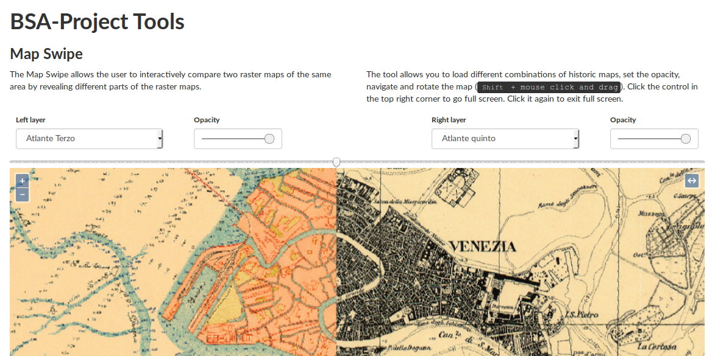
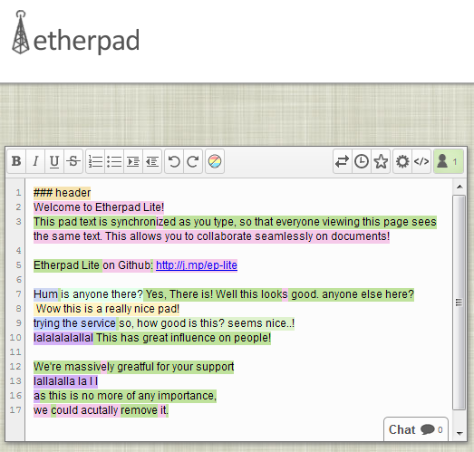

Dall'Atlante della Laguna all'MSP: esperienze di data management in sistemi standard aperti.
Alessandro Sarretta
e Stefano Menegon
CNR - Istituto di Scienze Marine
Consiglio d'Istituto ISMAR - Bologna, 5 Luglio 2016
Il filo rosso
Percorso che si snoda dal 2006 ad oggi
Da una rete informale di ricercatori, tecnici e professionisti ad un modello cooperativo formalizzato (middle-out)
- Open science (risultati delle ricerche, dati, software),
- Interoperabilità e standard
- Comunicazione della conoscenza scientifica
- Environmental & geospatial data
L'Atlante della Laguna - Contesto
- Complessità ambientale
- Complessità del quadro normativo
- Complessità e sovrapposizione degli strumenti di monitoraggio e di gestione
- Complessità e sovrapposizione dell'assetto della ricerca scientifica ambientale
Gli inizi
Gennaio 2006 - Atlante della laguna: il libro!
Su iniziativa dell'Osservatorio della Laguna e del Territorio del Comune di Venezia
a cura di S. Guerzoni, D. Tagliapietra (CNR-ISMAR)
- Raccolta di 103 tavole che descrivono le caratteristiche ambientali della laguna di Venezia e della relativa zona costiera rivolto ad un pubblico il più eterogeneo possibile.
- Scopo: promuovere un approccio interdisciplinare alle tematiche ambientali facilitando lo scambio di informazioni tra comunità scientifica e società.
Evoluzione del supporto
| Atlante della Laguna (2006) | |
| Atlante della Laguna on line (2007): libro cartaceo sul web | |
| Sistema Informativo della Laguna (2008): tecnologia p.mapper/Drupal, WebGIS, mappe interattive | |
| CIGNo (2011): tecnologia GeoNode/Drupal, interoperabilità, sistema federato, modello collaborativo |
Evoluzione del network / partners
- Comune di Venezia – Assessorato Ambiente (2006)
- ISMAR (dal 2009)
- Ministero Ambiente – Geoportale Nazionale (2009)
- CORILA; IVSLA; Istituzione Parco della Laguna (2011)
- Istituzione Bosco e Grandi Parchi (2012)
- Provveditorato alle Opere Pubbliche - ex. MAV; Regione Veneto; ARPAV; Museo di Storia Naturale di Venezia; Consiglio di Bacino Laguna di Venezia (2013)
- Centro Previsione e Segnalazione Maree (2014)
Collaborazioni informali
- International Coastal Atlas Network (ICAN)
- Crew Earth Observations, Image Science & Analysis Laboratory, NASA Johnson Space Center, USA
- IUAV
- Università di Padova
- Università Ca’ Foscari – Dip. Scienze Ambientali
- Soprintendenza ai Beni Architettonici e Paesaggistici di Venezia e laguna (partenariato in itinere)
Progetti connessi
SIPLAN - Sistema Informativo per l'interoperabilità dei dati sulla pianificazione urbanistica e territoriale del Sito Unesco "Venezia e la sua laguna"RITMARE SP7: Infrastruttura interoperabile per il progetto Ritmare. Sviluppo dello StarterKit
ADRIPLAN - ADRiatic Ionian maritime spatial PLANning
I contenuti
-->Alcuni numeri:
11 Categorie tematiche,
443 Strati informativi (layer),
53 Mappe (aggregazione di layer),
2500 Utenti/mese
Batimetria 2002 (MAV)
Simulazione della marea e delle correnti della laguna in tempo reale
Modello Open Source SHYFEM. Realizzazione M. Bajo, S. Menegon, A. Vianello
Workflow della simulazione

Foto NASA dalla Stazione Spaziale Internazionale
http://cigno.atlantedellalaguna.it/maps/17/viewImage courtesy of the Earth Science and Remote Sensing Unit, NASA Johnson Space Center (http://eol.jsc.nasa.gov)
Verso un quadro di conoscenze condivise
CIGNo
Collaborative Interoperable Geographic Node
http://cigno.ve.ismar.cnr.it http://cigno.ve.ismar.cnr.itBSA - Biblioteca degli Studi Adriatici
http://cigno.ve.ismar.cnr.it/bsa/L'evoluzione morfologica della laguna dal XVI secolo ad oggi
Ricerca e analisi: Luigi D'Alpaos (UniPD)
Map Swipe tool
http://cigno.ve.ismar.cnr.it/bsa/tools Il progetto ADRIPLAN
- EU funded project to develop MSP in the Adriatic-Ionian Macroregion
- December 2013 - July 2015
- Transboundary (4 countries: Croatia, Italy, Slovenia, Greece), 8 Scientific Partners and 9 Institutional Partners, 17 observers
- An integrated and collaborative web-infrastructure for publishing, sharing and processing scientifc data
- Actually, the infrastructure and MSP tools are currently under further development
1 - Adriplan Data Portal
- GeoNode fork: GeoDjango, OWSlib, PyCSW, GeoServer
- Geospatial data storage / archiving, discovering, sharing
- Interoperable services: collaborative SDI
- Granular permissions system
- Interactive mapping
1 - Adriplan Data Portal
- 322 layers (geospatial datasets - raster + vector)
- 113 maps (combination of layers)
- Deal with external OGC-services through "Remote services" functionality
2 - MSPTools
- GeoNode plugin (python)
- Direct interaction with stored data
- The users can build several scenarios (called Case Studies) by choosing the analysis area, the data layers, the analysis grid cell
- The output includes: geographical layers, raw data, base statistics and graphs
- The spatial outputs from each run are automatically saved and published through the portal
MSPTools - Cumulative impact
Identify areas in the marine space where the environmental components are more exposed to anthropogenic pressures
- Activities and uses (e.g. Maritime transport)
- Environmental components (e.g. Marine mammals)
- Pressures (e.g. Underwater noise)
- Sensitivities: the sensitivity of each environmental component to each pressure generated by a maritime use
firstly introduced by Halpern et al. (2008) at global scale, then implemented in several Marine Regions (Mediterranean by Micheli et al. (2013), Baltic Sea by (Korpinen et al., 2013), and North Sea (Andersen et al., 2013)).
3 - Analysis, Rapid prototyping

Jupyter notebook, reusable ".ipynb" files
Elementi in comune
- Standard e interoperabilità
- Ambienti collaborativi
- Software open source
- Infrastruttura IT
Gestione dati a Venezia
Photo by Leonardo Rizzi: https://www.flickr.com/photos/stars6/4381851322/- sala server
- cluster di processing
- storage
- server virtuali (CIGNo, GET-it, THREDDS)
- testing di altri servizi:
- Owncloud
- Etherpad
- Discourse

Perché Open Software?
- Prodotto della ricerca scientifica
- Computational Science
- Modello di sviluppo collaborativo (strumenti, modelli concettuali)
- Preservazione e riproducibilità (papers, data, software)
Free/Libre/Open Source Software (FLOSS)
"Free software" is a matter of liberty, not price. To understand the concept, you should think of "free" as in "free speech", not as in "free beer"
Richard M. Stallman
Given enough eyeballs, all bugs are shallow
Eric Raymond - Linus's Law
L'elemento innovativo
Copyright - Copyleft
- Libertà di eseguire il programma per qualsiasi scopo
- Libertà di studiare il programma e modificarlo
- Libertà di ridistribuire copie del programma in modo da aiutare il prossimo
- Libertà di migliorare il programma e di distribuirne pubblicamente i miglioramenti, in modo tale che tutta la comunità ne tragga beneficio
GitHub
Social tools e nuovi modelli per lo sviluppo del software Open Source
Trasparenza delle interazioni all'interno delle comunità
Version Control System
The long history: cvs, svn, mercurial, git


- records changes over time
- you can recall specific versions later
- lets multiple users simultaneously edit their own copies
- strategies: merging and conflict resolutions


 Roger D. Peng, Reproducible Research in Computational Science, Science, 2011
http://www.sciencemag.org/content/334/6060/1226
Roger D. Peng, Reproducible Research in Computational Science, Science, 2011
http://www.sciencemag.org/content/334/6060/1226
Possibili argomenti di discussione per un miglioramento del data management
- Data Policy
- Applicazione di standard internazionali aperti
- Data Management Plans
- Licenze standard
- Strumenti condivisi per:
- archiviazione dati
- sviluppo scientifico (software, articoli, ...)
- condivisione dati
- Infrastruttura IT
- Personale
Data Policy
- Necessità di avere data policies standard
- Non solo accesso
- Riuso in ambito scientifico
- Riuso anche da parte di amministrazioni e soggetti economici (e.g. Smart, Sustainable, Inclusive Growth)
- Machine-to-machine (TDM: Text and Data Mining)
Data policy RITMARE
https://dx.doi.org/10.6084/m9.figshare.1235546Licenze Creative Commons
http://creativecommons.org/Dall'Atlante della Laguna all'MSP: esperienze di data management in sistemi standard aperti
by A. Sarretta, S. Menegon is licensed under a Creative Commons Attribuzione 4.0 International License.